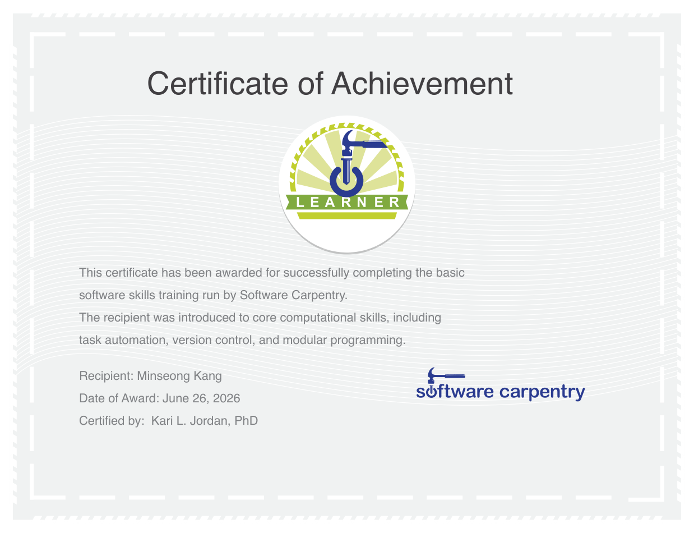

SELECTED WORK
프로젝트
캡스톤 · 우수상 수상
OcclusionGateNet
얼굴 차폐·야간에도 강건한 운전자 모니터링 시스템. 랜드마크 복원과 차폐 인지 동적 융합, 실차 데모까지.
현장실습 · 팀
LawDict
AI 기반 입법 분석 플랫폼. CatBoost 법안 처리 예측과 GPT 분석 리포트·챗봇, 유사 법안 검색.
개인 · 진행 중
식자재 유통 ERP
실제 사업장에 도입할 실무용 ERP 웹앱. 서비스 계층 설계와 재고 원장 기반 정합성 관리.
AI 서비스
AllerCheck
사진 한 장으로 알레르기 위험을 판단하는 AI 웹서비스. YOLO v8 학습과 Gemini 하이브리드 추론.
데이터베이스
식품 알레르기 정보 시스템
웹 크롤링과 OCR로 제품 1,152개 데이터를 직접 구축하고 3NF로 설계한 DB 프로젝트.
실시간 처리
live-captions
리턴제로 STT API 기반 실시간 방송 자막 웹 데모. 마이크 라이브 자막과 영상 동기 자막.
웹 · 팀
Spider Web Player
플랫폼 독립적인 플레이리스트 공유 SNS. Shazam 음원 인식과 OCR로 곡을 편하게 추가.
라이브 데모
Gapminder EDA
인구가중 통계·수렴 분석 기반 심화 EDA와 Quarto 대시보드. GitHub Pages로 라이브 배포.
임베디드
Smart Doorlock
Shift 조합 입력과 시도 제한을 구현한 아두이노 도어락. 케이스 3D 프린팅까지 직접 제작.
RECOGNITION
수상 · 수료
